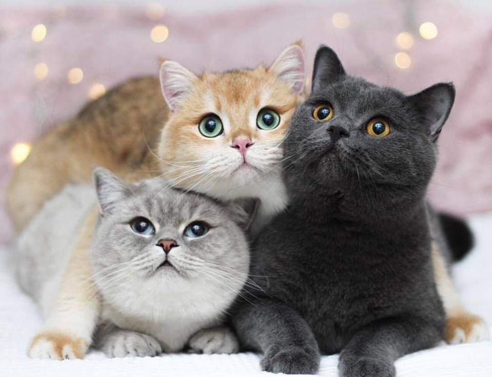

Curiosidades fascinantes sobre los gatos
Los gatos son animales fascinantes y misteriosos que han cautivado a los humanos durante siglos.
A continuación, te presento algunas curiosidades interesantes sobre los gatos:
Visión nocturna: Los gatos tienen una visión nocturna excelente gracias a sus ojos grandes y sensibles,
que les permiten ver en la oscuridad. Esto se debe a que sus ojos tienen una capa reflectante llamada
"tapetum lucidum" que refleja la luz hacia la retina, lo que les permite ver mejor en condiciones de
poca luz.
Oído agudo: Los gatos tienen un oído muy agudo y pueden escuchar sonidos que son demasiado débiles
para que los humanos los detecten. Esto les permite detectar sonidos de alta frecuencia que son
inaudibles para los humanos.
Lenguaje corporal: Los gatos se comunican principalmente a través del lenguaje corporal, utilizando
posturas, gestos y expresiones faciales para transmitir mensajes. Por ejemplo, un gato que se siente
amenazado puede arquear su espalda y mostrar sus garras.
Independencia: Los gatos son animales independientes y pueden pasar horas solos sin sentirse aburridos o
estresados. Esto se debe a que son animales solitarios por naturaleza y no necesitan la compañía constante
de otros gatos.
Cazadores naturales: Los gatos son cazadores naturales y tienen un instinto fuerte para cazar y matar
pequeños animales. Esto se debe a que sus antepasados eran depredadores que se alimentaban de pequeños
mamíferos y aves.
Sueño: Los gatos duermen mucho, hasta 16 horas al día, y pueden dormir en cualquier lugar y en cualquier
posición. Esto se debe a que son animales que necesitan descansar mucho para conservar energía.
Pelo: El pelo de los gatos es muy especial y tiene propiedades únicas, como la capacidad de repeler el
agua y la suciedad. Esto se debe a que el pelo de los gatos está cubierto de una capa de queratina que les
da una textura suave y resistente.
Inteligencia: Los gatos son animales muy inteligentes y pueden aprender a hacer trucos y a resolver
problemas. Esto se debe a que tienen un cerebro muy desarrollado que les permite aprender y adaptarse a
nuevas situaciones.
Memoria: Los gatos tienen una memoria excelente y pueden recordar lugares, personas y eventos durante
mucho tiempo. Esto se debe a que su cerebro tiene una capacidad de almacenamiento de memoria muy grande.
Amor: A pesar de su independencia, los gatos son capaces de sentir amor y afecto hacia sus dueños y pueden
formar lazos muy fuertes con ellos. Esto se debe a que son animales que pueden formar vínculos emocionales
con los humanos.
